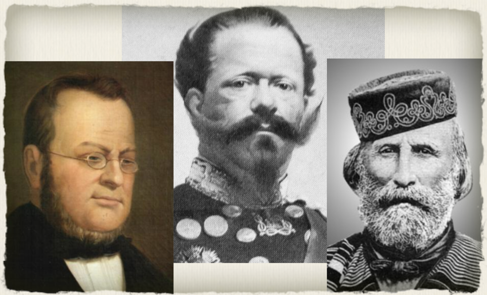
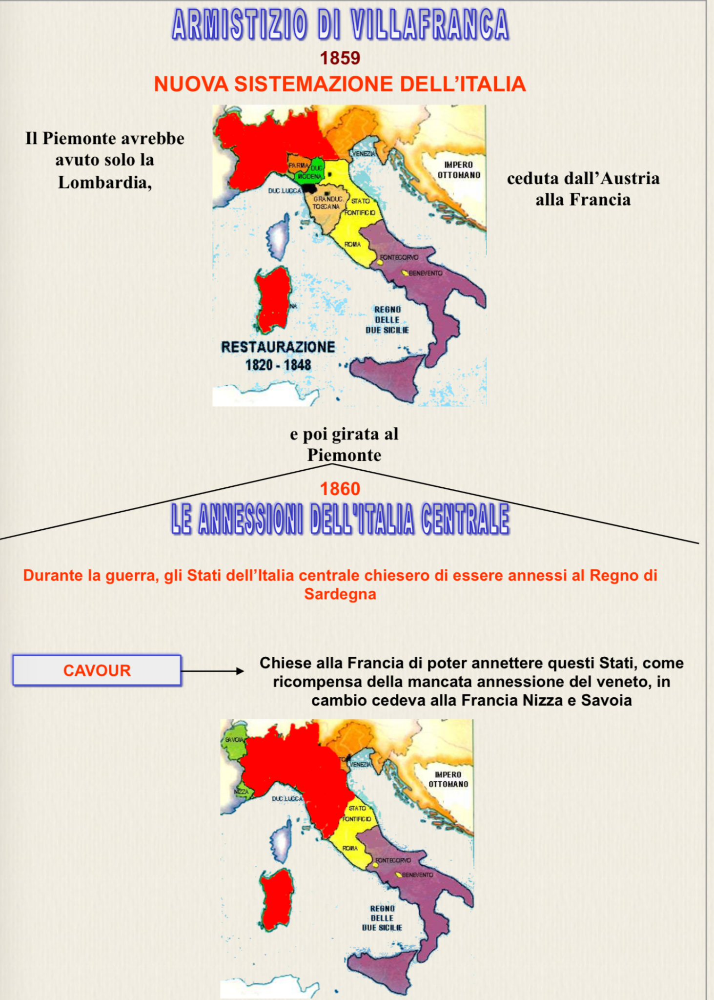
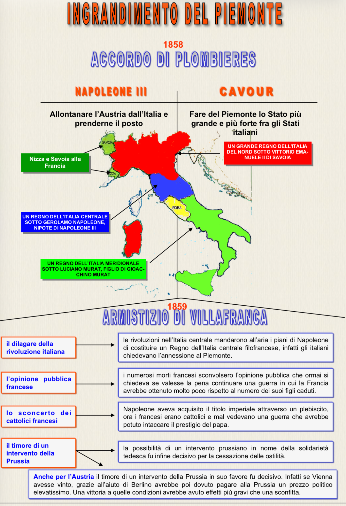
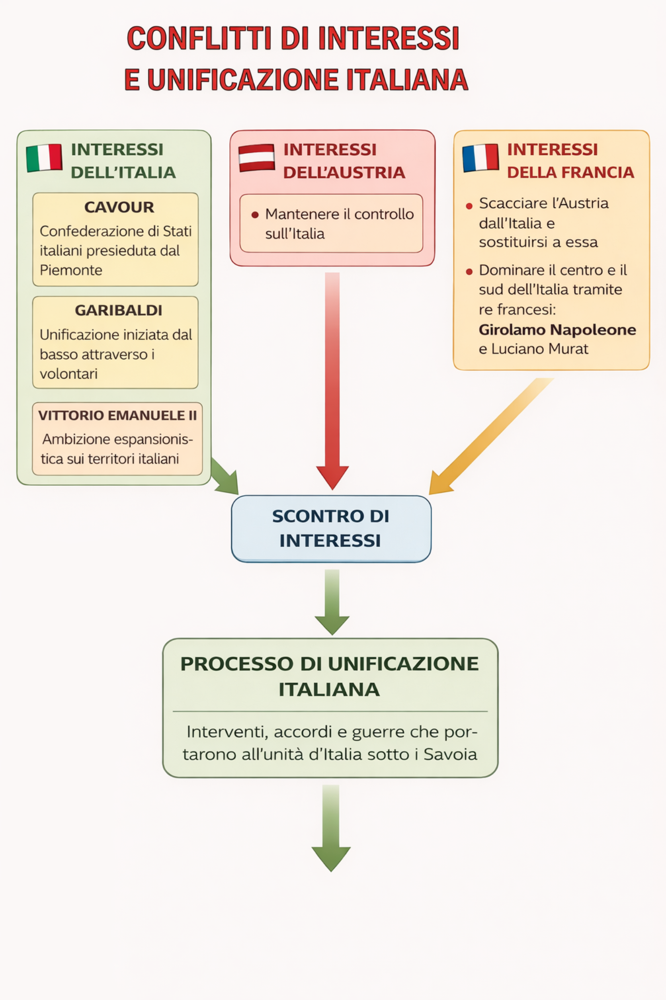
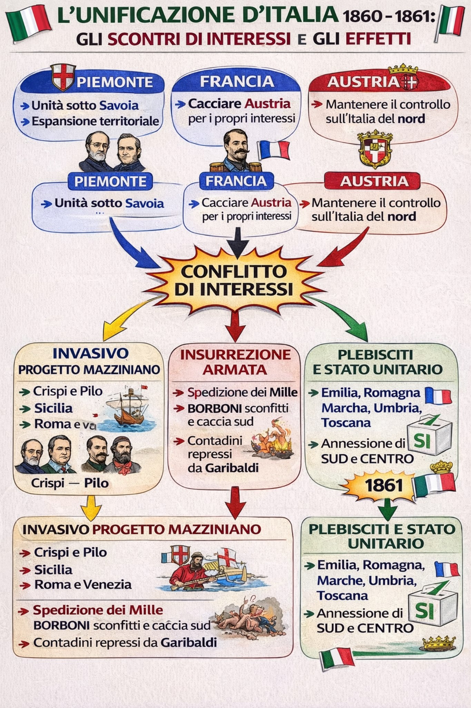

Premessa: l’unità come intreccio di progetti e ambizioni
Non un disegno unico: convergenze provvisorie tra interessi differenti.
Il processo di unificazione nasce dall’intreccio di strategie politiche, iniziative militari e ambizioni dinastiche. Non fu il risultato di un unico progetto coerente, ma l’esito di visioni differenti. In primo piano: Cavour (politica), Garibaldi (iniziativa), Vittorio Emanuele II (dinastia).
Chiave interpretativa: gli interessi (Piemonte/Italia, Francia, Austria) generano accordi, poi guerra, poi plebisciti che legittimano l’annessione.


Italia centrale: governi provvisori e plebisciti
Rivolte e annessioni: nasce lo “scheletro” dello Stato unitario.
Cadono sovrani e si formano governi provvisori che chiedono l’annessione al Piemonte. Cavour ottiene il riconoscimento cedendo Nizza e Savoia alla Francia.
Materiale allegato: il PDF completo è linkato qui.
- Apri il PDF +Meccanismo
- Rivolte → governi provvisori
- Plebisciti → legittimazione
- Diplomazia → riconoscimento
Spedizione dei Mille: conquista nazionale e frattura sociale
Unità politica, ma tensioni sociali nel Mezzogiorno.
La spedizione parte da Quarto, sbarca a Marsala e conquista la Sicilia. Poi passa sul continente. Garibaldi diventa la “cerniera” tra l’iniziativa rivoluzionaria e l’esito monarchico.
@@ -295,40 +305,41 @@

Plombières → Villafranca
Spedizione → Unità
Interessi → effetti